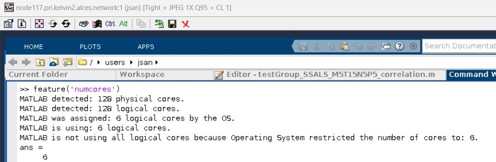
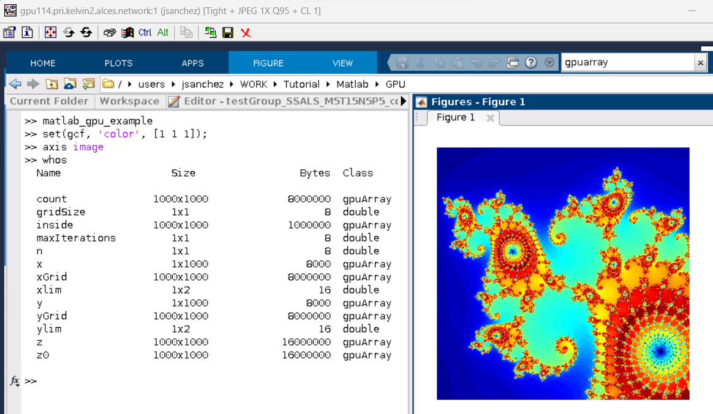
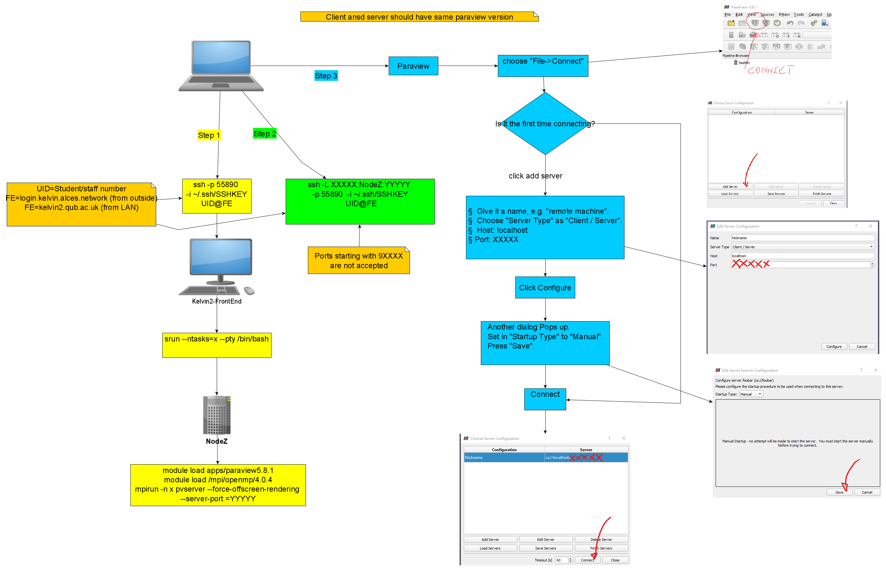
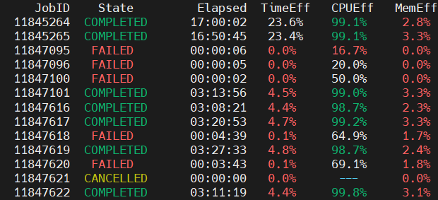

Application Guides
Here we will provide information on some of the most popular centrally installed applications and software tools on Kelvin2.
Anaconda
Anaconda is a software that allows the users to manage environments to install local libraries and software, particularly Python and R programming languages, for scientific computing. Thus, greatly easing software management and reducing possible incompatibilities among different tools, libraries or software versions.
Installed versions
apps/anaconda/2.5.0/bin
apps/anaconda3/2021.05/bin
apps/anaconda3/2022.10/bin
apps/anaconda3/5.2.0/bin
Usage notes
Redirecting default installation paths to Scratch directory
When installing packages with Anaconda, it is recommended that users redirect the default installation paths to their Scratch directory. This is because the installations typically generate a very large number of small files which can breach the 100k file limit in place on the Home directory. This can be done by modifying the environment variables CONDA_PKGS_DIRS and CONDA_ENVS_PATH as follows:
Selecting the correct hardware prior to installation
When installing packages with Anaconda, it is critical to perform the installation on a node with the appropriate hardware in place. For example, if you intend to run your code using a GPU device, but install that code (or its dependencies) using a node without one, the GPU device may not being recognised at runtime. This may result in your program crashing, or instead run in the CPU cores by default. In the latter case, your jobs may take significantly longer to complete and also would also cause the requested GPU resources to be sitting idle and unavailable to other users.
Complexities in installing packages with Python and Anaconda
When installing packages with both Python and Anaconda, there may be complexities related to package version incompatibilities, the proper Python version (maybe an older or newer version is strictly required), package installation order, or the possible necessity to install supporting libraries. The first three "Usage examples" below demonstrate the installation of some commonly used applications.
Usage examples
Installing PyTorch and Ray Tune
In this example, PyTorch is installed together with Ray Tune. The latter is a tool used for deep learning models optimization as it helps with the evaluation and selection of model hyperparameters (e.g., number of layers, neurons per layer, selection between different transfer or optimization functions, etc.)
Line 1 above shows the use of GPU slice partitions: --gres gpu:1g.10gb:1. As currently there are available 28 slices in Kelvin2, this partition is much less busy than the other GPU partitions, and at the same time would allow the users to install software in the A100 GPU devices, which would guarantee backward compatibility with GPU devices.
Lines 2-5 setup the environment variables, create an Anaconda environment named py39torchRayA100 while installing Python version 3.9, and activate the environment. This Python version is strictly required here as current Ray Tune installation version may crash with newer Python versions than 3.10.
The next lines 6-10 are needed to install the required tools, particularly Ray Tune is installed in line 9. Here, the package "ray-air" contains most of the provided functionality by Ray Tune (Data, Train, Tune, Serve, etc.).
After installation, users must check that PyTorch can correctly utilize the GPU resources available. For example, users must see something similar to the following output when running the PyTorch's functions:
source activate py39torchRayA100
(py39torchRayA100) python3
>>> import torch
>>> torch.cuda.is_available()
True
>>> torch.cuda.current_device()
0
>>> torch.cuda.device(0)
<torch.cuda.device object at 0x7fec6d471850>
>>> torch.cuda.get_device_name(0)
'NVIDIA A100-SXM4-80GB MIG 1g.10gb'
>>> exit()
(py39torchRayA100) conda deactivate
Installing tensorflow-gpu and Ray Tune
For installing tensorflow-gpu and Ray Tune, follow these instructions:
Users also must test that tensorflow can correctly see the GPU resources. For that purpose, after installing the software, use the following commands:
Installing and using Bindsnet
In this example, users can overview how to install Bindsnet in Kelvin2:
The apparent simplicity of above instructions hides some complexities. For example, the declaration of the "PATH" environment variable in line 4 may be neccesary when PyPi/pip is combined with Anaconda, as some of the installed packages may still be missing after installation, unexpectedly. Also, in line 6, Python's version 3.10 was installed as Bindsnet most recent version at this moment seems not to be compatible with older Python versions.
Finally, when installing Bindsnet in line 7, it automatically finds and installs all needed dependencies, including the compatible versions for torch, torchvision, etc. Therefore, we do not recommend to install any package before bindsnet, otherwise bindsnet installation can fail. Then, in line 8, the command python3 -m pip show bindsnet allows to get the physical path where Bindsnet is installed, which may be necessary to access some folders with testing examples and scripts. For the same reasons, users may want to install the package "pytest", as it is done in line 9.
As Bindsnet will install automatically PyTorch as one of its dependencies, we strongly recommend to test that PyTorch can see the GPU resources, as discussed in the Installing Pytorch and Ray Tune example.
The following is an example of sbatch script that uses the installed Bindsnet package, which can be launched from command line using the command sbatch bindsnet_example.sh. Of course, users must have first to prepare their python codes, with the main file name provided in line 19.
Installing R Packages (e.g. HOMER) with Anaconda
To create an environment on the user's scratch folder to install a particular version of R, follow these instructions:
| R installation in an Anaconda environment | |
|---|---|
Here, the preferred version (4.1.2) is specified in line 5 with the argument "r-base=4.1.2". For other versions, check the Anaconda R's online documentation, for example here or here for more information.
Installation Example: HOMER
The following example illustrates how to use this environment for installing a particular R's package HOMER, proceeding from a clean/new Kelvin2 terminal connection.
srun -p k2-hipri -N 1 -n 4 --time=3:00:00 --mem=16G --pty bash
module load apps/anaconda3/2021.05/bin
export CONDA_PKGS_DIRS=/mnt/scratch2/users/$USER/conda/pkgs
export CONDA_ENVS_PATH=/mnt/scratch2/users/$USER/conda/envs
source activate R412env
(R412env)$ conda config --add channels defaults
(R412env)$ conda config --add channels bioconda
(R412env)$ conda config --add channels conda-forge
(R412env)$ conda install -c bioconda samtools r-essentials bioconductor-deseq2 bioconductor-edger
(R412env)$ conda install homer
(R412env)$ conda update homer
(R412env) conda deactivate
Users should notice that when working with R inside an Anaconda environment, the libraries must be installed with the command conda install .... Whereas, the packages can be installed either in the same way by using conda install, or from the R's command line; for instance, using the function installed.packages().
Jupyter Notebook with TensorFlow in Anaconda
Here, we present instructions to install and use Jupyter notebook in Kelvin2, in the case for training deep learning networks with tensorflow-gpu.
If the user does not need to use GPU resources, for example, the plan is to run on CPU cores, then srun instruction in line 2 must be used, instead of line 1, to get an interactive session in CPU nodes for the installation. Also, ignore the installation of tensorflow part if the only purpose is to install Jupyter notebook to be used with other packages, such as Pandas or NumPy. In that case, just create the environment in line 4 with the following instruction: conda create -n <environment_name>.
Finally, to access Jupyter notebook remotely from the (local) browser in the user's PC/laptop, the user must launch a Jupyter server connection and create a tunnel to it. To launch the server, run these commands:
Jupyter notebook has to run in a compute node. That is why first need to allocate a compute node with srun command as shown in line 1 or 2 for a GPU or CPU node. Here, the server is lauched in line 5. Some critical output is printer, mainly the IP and port number, which should be annotated for using later to create the tunnel.
For the last part, open a local terminal in the user's PC/laptop, and enter the following instructions:
This establishes the tunnel using ssh command, where it has been assumed that the IP and port number annotated above are "10.10.15.3" and "8888", respectively.
If not errors are reported during the execution of these commands, and the terminal looks like hanging out, then everything is ok, and the last step is to open a local browser and enter the adress "http://127.0.0.1 ...", which must have been shown in the output when the server connection was created.
Ansys
"For more than 50 years, Ansys software has enabled innovators across industries to push boundaries with the predictive power of simulation. From sustainable transportation and advanced semiconductors, to satellite systems and life-saving medical devices, the next great leaps in human advancement will be powered by Ansys." - Ansys Company Information
Installed versions
Usage notes
Licensing
Ansys is a licensed software. In order to use it, users have to be registered in the license server. If you are not already included in the license server, you must contact the person in charge of it:
QUB: TBA
Ulster: TBA
When the module is loaded, license parameters for QUB are loaded by default. Ulster users should change these license parameters in their batch script or interactive session. Contact the person in charge of the license for details.
User Manual
The user manual for Ansys is not publicly available, and only licensed users can access to it. To access to this material, you must register on the Ansys website.
Usage examples
Ansys Fluent batch script example
#!/bin/bash
#SBATCH --job-name=myfluentjob
#SBATCH --output=myoutput.out
#SBATCH --error=myerror.err
#SBATCH --nodes=1
#SBATCH --ntasks=32
#SBATCH --partition=k2-hipri
#SBATCH --mem=100G
module load apps/ansys/2023.1
## QUB's license, already loaded with the module
#export ANSYSLI_SERVERS=2325@143.117.212.118
#export ANSYSLMD_LICENSE_FILE=1055@143.117.212.118
## Ulster's license
#export ANSYSLI_SERVERS=2325@193.61.145.219
#export ANSYSLMD_LICENSE_FILE=1055@193.61.145.219
# Set architecture of the CPU (in this case amd64) and environment variables
export FLUENT_ARCH=lnamd64
export FL_TMPDIR=$SCRATCH/tmp
# Create our hosts file
srun hostname -s | sort > hosts.$SLURM_JOB_ID.txt
#Run Ansys Fluent.
fluent 3ddp -g -t$SLURM_NTASKS -pinfiniband -mpi=openmpi -cnf=hosts.$SLURM_JOB_ID.txt -i my_fluent_input > my_fluent_output.res
MATLAB
https://uk.mathworks.com/products/matlab.html
"MATLAB is a programming platform designed specifically for engineers and scientists to analyze and design systems and products that transform our world. The heart of MATLAB is the MATLAB language, a matrix-based language allowing the most natural expression of computational mathematics." - What is MATLAB?
Installed versions
Usage examples
Interactive mode (CLI) on a CPU compute node
One way to run MATLAB interactively is to request a compute node with the srun command. For example, request 1 compute node and 10 cores in "k2-hipri" partition:
srun -p k2-hipri -N 1 -n 10 --mem=10G --time=1:00:00 --pty bash
module load matlab/R2022a
matlab -nosplash -nodisplay
Then, inside MATLAB, notice that calling the function feature (line #1 below) must show that exactly 10 CPU cores are available, corresponding to the number of cores allocated above with the srun command. Next, the codes launches the parallel pool (parpool) for the "local" cluster requesting the same amount of workers as the cores allocated in this example.
More robust, the number of workers can be read and set automatically to launch the parallel pool:
Finally, you can run your MATLAB parallel code, which must include a "parfor" loop. For example, the following code illustrates the use of parfor and Monte Carlo simulation to calculate an approximate value for \( \pi \), using the formula (line #7):
where the symbol \( \mathcal{U}(0,1) \) represents the random uniform distribution for the indicated interval and \( I(boolean) \) is an indicator function.
| Matlab code for parfor demonstration | |
|---|---|
At the end of the parallel computations, the allocated parpool within MATLAB can be released with the following command:
Interactive mode (GUI) on a CPU compute node
First, get a compute node and launch vnc server from the node, for example:
In this case, let us assume that the output of vncserver is
New 'node117.pri.kelvin2.alces.network:1 (jsan)' desktop is node117.pri.kelvin2.alces.network:1
Starting applications specified in /users/jsan/.vnc/xstartup
Log file is /users/jsan/.vnc/node117.pri.kelvin2.alces.network:1.log
Then, open a local terminal and launch a forward tunnel to the compute node by following these steps:
- Go to the directory which contains the Kelvin key in your PC/laptop
- Create the tunnel (in this example illustrated with the command below, all input sent via port 5903 on your local host is being forwarded via port 5901 to the compute node "node117.pri.kelvin2.alces.network". If the
vncserveroutput above were "node117.pri.kelvin2.alces.network:7", then the port number will be 5907 instead of 5901. Clearly, users must replace the username "jsan" and the key's filename by the corresponding information for their accounts) - Connect to the tunnel using your installed VNC application (the example shown in the figure below uses TurboVNC in Windows OS. More details or troubleshooting can be found in the VNC session)
- Once in the opened terminal for the connected compute node, launch the MATLAB application:
This time MATLAB GUI will be opened as shown in the figure below. For a better experience, use the "full screen" button in the VNC toolbar, and use the combination keys Ctrl+Alt+Shift + F to escape from the full screen mode. Note also that using the instruction feature('numcores') inside the MATLAB GUI session shows correctly the number of allocated CPU cores in the compute node (CPU cores equal to 6 in this example).

MATLAB script used in following GPU examples
The following code matlab_gpu_example.m is to be used in the following GPU examples
Interactive mode (GUI) on a GPU compute node
First, get a GPU node and launch vnc server from the node, for example:
srun -p k2-gpu-interactive -N 1 -n 4 --gres gpu:1g.10gb:1 --time=3:00:00 --mem=20G --pty bash
vncserver
Then (as with the instructions in the 'Interactive mode (GUI) on a CPU compute node' example above),
- Open a local terminal and launch a forward tunnel to the GPU node;
- Use a VNC application to connect to the tunnel
- Load and launch the MATLAB software.
To test the use of the GPU device within MATLAB code, copy and paste the lines from the matlab_gpu_example.m script file above.
The following results should appear when you run this script in the GUI that is running on the cluster's GPU, as per below. As shown in the MATLAB command window, the output of calling the function whos reveal the many variables (gpuArray objects) that are still allocated on the GPU.

Batch script example (GPU)
The most convenient way to use the cluster resources may be to perform MATLAB calculations in background, using sbatch functionality instead of srun. This is critical, mainly for analysis where calculations may take several hours or days. To demonstrate this, simply copy and paste the following "sbatch" script, called gpu_example.sh, as an example which relies on the same script prepared above to calculate the Mandelbrot solution.
matlab_gpu_example.m script. Besides, note that the code will run in background, i.e., without display, therefore it must use some MATLAB function like saveas, as shown in the code, which saves the graphical output. As a result, the MATLAB file that must be listed now in the working directory, Mandelbrot.fig, should contain the visual results. Finally, to run this "sbatch" script, run the following command in your terminal.
ParaView
"ParaView is the world’s leading open source post-processing visualization engine. It integrates with your existing tools and workflows, allowing you to build visualizations to analyze data quickly. With its open, flexible, and intuitive user interface, you can analyze extremely large datasets interactively in 3D or programmatically using ParaView’s batch processing." - About ParaView
Installed versions
apps/paraview/5.10.0-rc1/bin
apps/paraview/5.4.1/bin
apps/paraview/5.6.1/bin
apps/paraview/5.8.1/bin
apps/paraview/5.9.0/bin
Usage examples
Paraview Server on Kelvin2 with visualisation on local machine
A recommended method to run Paraview on Kelvin-2, it is to start a PV server on Kelvin-2, and to use your local machine to visualize the graphical interface. In this case, you need an installation of Paraview in your local machine as well.
With the following method, Paraview can be run in parallel, and use the local machine to work with the graphical interface. It is necessary to set a tunnel through the Kelvin-2 login node.
As example, we are going to explain how to set the tunnel and connect with a computer outside the QUB campus. If the local machine is insithe the QUB campus, you have to remove the specification of the port -p, the identification private-key file -i, and to change the IP name to kelvin2.qub.ac.uk.
Step 1. Run pvserver in a computing node of Kelvin-2.
Open the session in Kelvin-2 as usual, and then open an interactive session. <N> will be the number of cores you require for your parallel job on Paraview.
$ srun --pty --partition=k2-hipri --ntasks=<N> --mem-per-cpu=2G /bin/bash
Then, you are transferred to a computing node.
Now load the necessary modules, for paraview, and for OpenMPI.
[<uid>@nodeNNN [kelvin2] ~]$ module load apps/paraview/5.8.1/bin
[<uid>@nodeNNN [kelvin2] ~]$ module load mpi/openmpi/4.0.4/gcc-9.3.0+ucx-1.8.0
Run the server with the command
[<uid>@nodeNNN [kelvin2] ~]$ mpirun -np <N> pvserver --force-offscreen-rendering --server-port=<YYYY>
Where <uid> is your Kelvin-2 username, <N> is the number of MPI tasks you want to run Paraview, and <YYYY> is a port number your choice.
Step 2. Create the tunnel to the port <YYYY>, through the port <XXXX> of your local machine.
In a different shell on your local machine, open the tunnel with the command:
(local)$ ssh -L <XXXX>:nodeNNN:<YYYY> -p 55890 -i ~/.ssh/my-kelvin-key <uid>@login.kelvin.alces.network
Where <uid> is your Kelvin-2 username, <YYYY> is the port number you let open in the former step, and <XXXX> is a different port number your choice on your local machine.
nodeNNN is the computing node that the srun command directed you in the former step.
Step 3. Open paraview in your local machine.
Inside the application click:
File - Connect
- Give a name to the session, e. g. "remote machine"
- In "Server Type" choose: Client / Server
- host: localhost
- Port: <XXXX> (from step 2)
Configure
- Startup Type: Manual
- Press Save
Connect
Once you created the client the first time, you can recover it the next time you open Paraview, you do not need to create it again, and you can connect directly in the step 3.

Python
Python is a high-level, multi-purpose programming language that support several paradigms such as structural, functional and object-oriented programming, together with garbage collection, in order to support code readability and fast development. With the provision of multiple specialized libraries, Python has become one of the most preferred languages for scientific programming, including machine learning and artificial intelligence, as well as bioinformatics among many other applications.
Installed versions
apps/python/2.7.8/gcc-4.8.5
apps/python3/3.10.0/gcc-4.8.5
apps/python3/3.10.5/gcc-9.3.0
apps/python3/3.4.3/gcc-4.8.5
apps/python3/3.5.2/gcc-4.8.5
apps/python3/3.6.4/gcc-4.8.5
apps/python3/3.7.4/gcc-4.8.5
apps/python3/3.7.9/gcc-10.2.0
apps/python3/3.8.5/gcc-4.8.5
Usage notes
Anaconda environments
It is often recommended to use Anaconda environments to install Python packages rather than pip. This is to reduce the risk of installation problems like package incompatibilities and the user not having write permissions to Kelvin2 system paths.
Installing pip packages in Scratch Directory
It is recommended that users declare/modify the environment variables "PATH" and "PYTHONPATH towards locations in the Shared Scratch directory in order to preserve space/quota in the Home directory.
This creates and uses the folder "gridware" in users' Scratch directory, so the pip install will be redirected to the Scratch directory instead of the Home directory.Default Python version on Kelvin2
On internet blogs/forums, users will often find the recommendation pip install <package name> to install a particular tool. In this case, for the same install in Kelvin2, it is recommended to precede the command with "python3 -m" because by default pip will refer to the Python 2.7 version, which is always available from command line in Kelvin2. That is, always use python3 -m pip install <package name> to install the package.
Usage examples
Installing reportseff in Home directory
The next code snippet illustrates simply how to load a module and install a package in the default location (gridware folder located in the users' home folder). This approach is only recommended for small installs.
Reportseff is a very usefull tool to monitor the efficient utilization of cluster resources (time, RAM, CPU/GPU) that may be critical for your work. It should be used in addition to sacct command, because it helps to optimize your jobs which may translates on significantly lower queue times. For instance, the reportseff's outcome below shows some job statistics (greed/red colour codes highlight good/poor resources utilization) for selected jobs.

R
R is an open-source and free software which provides a programming language designed purposedly for statistical analyses. It is also highly preferable for data mining tasks and machine learning analysis.
Installed versions
apps/R/3.2.1/gcc-4.8.5+lapack-3.5.0+blas-3.6.0
apps/R/3.2.5/gcc-4.8.5+lapack-3.5.0+blas-3.6.0
apps/R/3.3.2/gcc-4.8.5+lapack-3.5.0+blas-3.6.0
apps/R/3.4.2/gcc-4.8.5+lapack-3.5.0+blas-3.6.0
apps/R/3.5.1/gcc-4.8.5+lapack-3.5.0+blas-3.6.0
apps/R/3.6.1/gcc-4.8.5+lapack-3.5.0+blas-3.6.0
apps/R/3.6.3/gcc-4.8.5+lapack-3.5.0+blas-3.6.0
apps/R/4.0.4/gcc-4.8.5+lapack-3.5.0+blas-3.6.0
apps/R/4.1.0/gcc-4.8.5+lapack-3.5.0+blas-3.6.0
apps/R/4.1.2/gcc-4.8.5+lapack-3.5.0+blas-3.6.0
apps/R/4.1.3/gcc-9.3.0+lapack-3.9.0+blas-3.8.0
apps/R/4.2.2/gcc-9.3.0+lapack-3.9.0+blas-3.8.0
apps/R/4.3.0/gcc-9.3.0+lapack-3.9.0+blas-3.8.0
R/4.1.0/gcc-9.3.0+lapack-3.9.0+blas-3.8.0
R/4.1.2/gcc-9.3.0+lapack-3.9.0+blas-3.8.0
Usage notes
Setting R environment
By default, installing packages in R will fill up the users' quota (~50 GB hard disk + 100,000 files limit); therefore, it is advisable that the users setup an installation path for the packages. Below, the default install location is redirected to the user's scratch folder. The most transparent way to perform this operation is to create the file ".Renviron" in the home folder, which will keep the necessary R's environment variables to setup correctly the settings.
In line 1, a compute node is requested to perform packages installation and work with R. Do not use login nodes to perform these operations. Lines 2-3 create the needed R's library folder. If they are not created, environment initialization may fail to be setup correctly. This operation needs to be done only one time at the very beginning of your R utilization in Kelvin2. It is neccesary to create ".Renviron" in the home folder which is guaranteed in line 4. Then, the ".Renviron" file is prepared in line 5-8. Notice, in line 8, this file must end with a newline character. If not, the instruction in the last line will be ignored without warning nor error. The environment file is also setup once, or every time the user wish to change the default install and library folders. Once the R's module is loaded and R is lauched in lines 9-10, the test of running the R's function .libPaths() must show correctly the new library path (line 11).
Usage examples
Installing R packages, e.g. BiocManager, DESeq2
After setting up correctly the ".Renviron" file as presented above, installation of R's packages can proceed inside the R's application as follows:
Here, some issues may arise, such as that packages will not be installed correctly if some dependencies, libraries, or settings are not guaranteed. Therefore, the commands in lines 2, 4 are necessary in the present example. After that, the installation of the packages "BiocManager" and "DESeq2" is most straightforwardly done as shown in lines 7-8. Finally, the call to installed.packages() in line 9 will show all the installed R's packages.
When required libraries are not available in Kelvin2 module system, the users must contact the RSE Kelvin2 team. Otherwise, they can proceed to create an Anaconda environment, where installation of the R's preferred version, libraries and packages can be performed.
Singularity
In Kelvin-2, we use Singularity to run containers. The main advantage of Singularity is that it does not require root privileges to install the containers. Because of that, it is the most commonly used container in HPC systems.
Installed versions
Usage examples
More detail about using singularity and containers on Kelvin-2 can be found in the online seminar
Running a Docker image on Singularity
You need the docker image file mydockerimage.img as a tarball mytarball.tar
Go to a compute node
Load the module
To convert the tarball to singularity, first go to the directory where to tarball is located
Convert the tarball:
Execute the image
Create the tarball from a Docker image
These steps should be done in your local computer, where you have docker. Once you create the tarball, you have to copy it to Kelvin-2 and create the Singularity image in Kelvin-2.